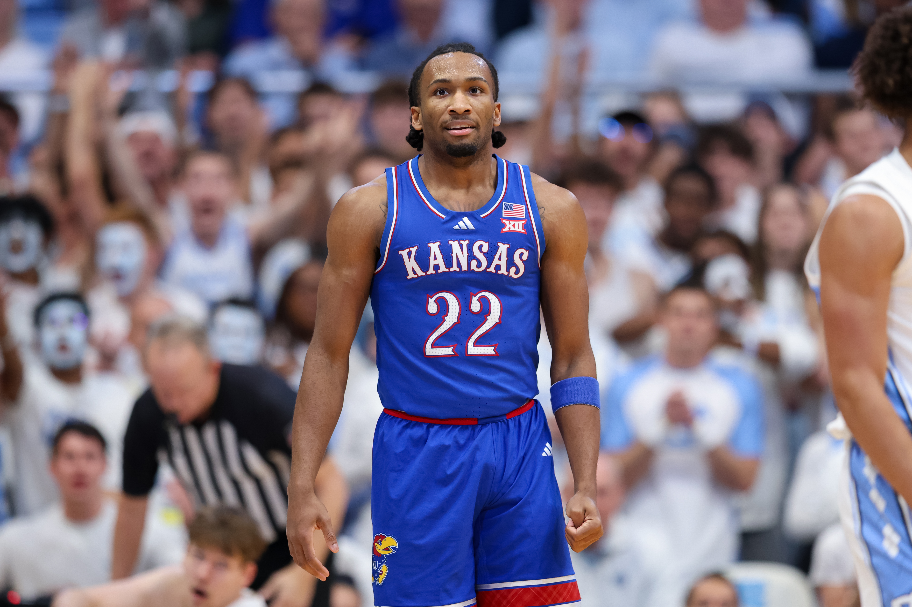
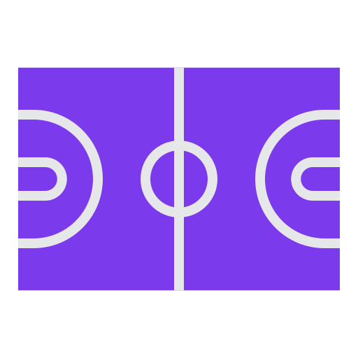

Midseason NBA Draft Review
A midseason snapshot of the most explosive NBA Draft prospects from one of the most hyped draft classes in recent memory
This year’s draft is shaping up to be the most highly touted draft since 2003, and you don’t need to be an expert at assessing talent to see why. Just as everyone in NBA circles is accepting a reality of “the foreigners are taking over,” we will have a draft where nearly the entire lottery will be American kids who played a year of college – with at least half the lottery comprised of elite talents.
There is a clear top four, followed by a laundry list of guys fighting for the fifth spot.
All four players feel pretty interchangeable as prospects at this midpoint of their college seasons, four guaranteed franchise talents separated only by their unique games and skill sets. Any one of them should hit at the next level. A closer look at these can’t-miss prospects reveals exactly why so many NBA teams are itching to land in the top of the lottery this season.

Darryn Peterson
Let’s start with the presumptive top overall pick, Darryn Peterson. People have compared his game to Kobe, Tracy McGrady and other elite scoring guards. Darryn is easily the favorite to hear his name called first in April, if he’s healthy and there is no doubt about his availability. While I don’t think his lingering hamstring and quad cramping issues will follow him to the league, this season has not sowed trust in his health. Even when he is constantly asking out to treat his cramps, he manages to put up a seemingly lackadaisical but enormous statline, like the 32 points in 32 minutes against TCU on January 6. Like his three other counterparts, he is the reason the one and done rule should not exist. This man is an NBA rookie-of-the-year candidate playing in college. He’s actually historically great through his first 10 games: he ranks first among all freshmen in the 3-point era (since 1986-87) with at least 5 games played and 20 minutes per game in points per 100 possessions, averaging nearly 50 points per 100 so far.
AJ Dybantsa
Before the season, AJ was breaking NIL earnings records. A few months into his freshman season at BYU, he’s graduated to breaking NCAA scoring records. He’s led the Cougars to their best start in 15 years, since Jimmer Fredette graced the Marriott Center. While he can shoot it, he’s more inclined to find the rim, thanks to his athleticism in a 6’9”, 210-lb frame. In his best performance, (January 24 vs. Utah) he set the BYU freshman record with 43 points. Only 12 of those 43 points came off three pointers, with the other 31 from an assortment of well-defended floaters, lay-ups, dunks and free throws. AJ is developing a reputation as a foul baiter, averaging nine trips to the line this year. Being frequently compared to Shai Gilgeous-Alexander. Like SGA, his high number of free throw attempts also highlights his unwavering confidence to attack the paint and force contact. Like Peterson, he’s historically good from a points per possession standpoint, ranking fourth among all the freshmen meeting the aforementioned criteria in per-possession scoring.
Cameron Boozer
A recurring theme here is each of these guys get their stats. You can box score watch all you want and get an idea that you should watch the highlights. Boozer has the highest floor of these four phenoms. Like AJ and Darryn, Cam makes putting up 20 points look easy. Yet, he is showing to be the most consistent, averaging a double-double and solidifying his case as the best big in the draft. He is already the betting favorite to win the lion’s share player of the year awards.The natural comparison is his dad, former NBA All-Star PF Carlos Boozer, but even that would sell him short. Cam is much more versatile than Carlos ever was, with a perimeter game that can stretch the floor effectively. He’s also been a higher-touted prospect than his dad for years now, after a high school career that ranks among the best of all-time in winning percentage and consistent production over all four years.
Caleb Wilson
He could end up being the best of the four. He is leading North Carolina to their best start in Hubert Davis’ five years as head coach. Wilson is the most versatile of the top four. Listed two inches below seven feet, he is a long, menacing presence compared to Kevin Durant. Although nowhere near the shotmaker Durant was at Texas, Wilson is a more broadly gifted player than KD at 18. He leads the Tar Heels in every statistical category except assists, where he sits at 2.8 per game to Kyan Evans’ 3.0. He consistently impresses with his ability to make a play on the defensive end, then immediately look to start the break. He also has a developed inside game, able to get a bucket in the paint when called upon. Caleb Wilson being the fourth guy on this list just goes to show how freakish the other three are.
These four guys are all clearly ahead of the rest, but there's a laundry list of others fighting for a lottery selection. While not all of them are from the US, for the first time in years, all these top prospects are exclusively college freshmen breaking into the American basketball scene.
Mikel Brown Jr.
The player most commonly mentioned behind the four juggernauts in the preseason, Brown has impressed when available, but unfortunately injuries have kept him sidelined for the last month. Brown Jr. is an offensive talent, but can struggle to shoot efficiently.
Kingston Flemings
Flemings is a notable new fifth selection in recent mock drafts. In any other draft he’d be the first scoring guard selected, but in this year’s guard-heavy class he is the third or fourth. Most recently, he scored 42 of Houston’s 86 points in a loss to conference and in-state rival Texas Tech.
Braylon Mullins
The 2025 Mr. Indiana Basketball has one of the highest ceilings in this list. Although he has yet to truly break out, he is a consistent deep threat and can be counted on to make timely tough shots.
Darius Acuff Jr
Acuff’s elite offensive prowess reminds of many past prized recruits of John Calipari. His ability to score and distribute efficiently is a large reason Arkansas remains a dark horse in the SEC regular season chase.
Nate Ament
Ament is a versatile wing with a big upside. Lanky but agile, he is comfortable leading the break or running the offense. Ament is unafraid to attack and plays with a short memory, always finding ways to find a look or get to the line.
Koa Peat
Peat’s hype has cooled off a bit since his 30 point emergence in the opener against defending national champion Florida. He continues to be one of the main characters of undefeated and top ranked Wildcats, providing a solid interior presence each game.
Tounde Yessoufou
In recent weeks, Yessoufou is slowly moving up draft boards and catching the eyes of scouts after three 20-point performances versus Big 12 competition. As the second leading scorer and rebounder on Baylor, he is a steady, reliable small forward who is only continuing to improve.
Keaton Wagler
An under-the-radar recruit from the Kansas City suburbs, local schools like Kansas, K-State and Missouri clearly overlooked Wagler and let him get to Illinois. He has already carved a vital role in Champaign and led the team to a signature road win at Purdue, scoring 46 points, and is rapidly climbing mock drafts following that breakout performance.
Hannes Steinbach
Steinbach is a long, near seven-foot nightmare to face on the defensive end. Offensively, he is able to easily find a good shot when fed in the paint, but steps outside to attempt 2-3 three pointers a game. He is constantly battling for rebounds and averages a double double. He aims to be the latest German big man to have an impact quickly in the league.
Brayden Burries
Builds on each performance and continues to rise draft boards. A natural scorer averaging 15 points per game with seven 20-point games this year. In Arizona’s first true road test at BYU, Burries scored a career high 29 to lead the Wildcats to the win.